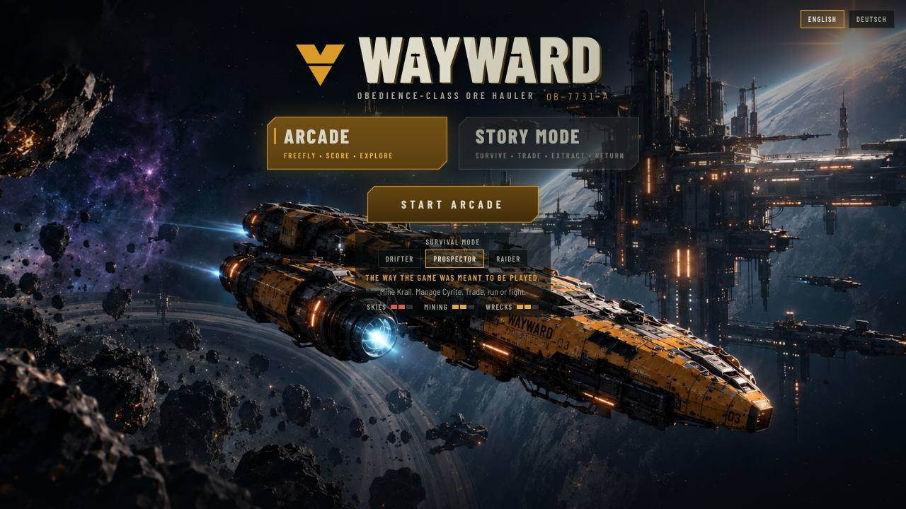

Side projects · 2026
AI experiments
Things I build with AI to see what happens. No brief, no client, just for fun.
01 · Wayward · Three.js
A stolen ship, and a system
that wants it back.
When I play a space game, I want the hard part to be what I spend and who I trust, so a run isn’t only about where I aim.
A cyberpunk space survival game in 3D, for desktop and phone browsers. You are a contract miner who found the wrong file and stole the wrong ship: the Wayward, an ore hauler the Continuance wants back, with you in it.
Story mode is a journey across about a dozen systems with a Prefect on your trail. Every jump costs Cyrite and days of food, and people call on the way: traders, miners asking for help, raiders. Each call pauses the game and asks what you’ll spend, who you’ll trust, or whether to fight. Arcade is the endless run: mine, fight, refit.
A scripted pilot plays whole journeys and writes a balance report, so a change shows up in the numbers before I play it.
The Wayward, an Obedience-class ore hauler

The start screen. Arcade or story mode, in English or German
02 · Erntereif · React
A seasonal calendar for
what is actually growing near you.
When I’m food shopping, I want to know what’s in season here right now, so I can buy that instead of something flown in out of season.
87 crops, five countries, German interface. Pick a month and it shows what’s being harvested, what’s out of cold store, and what the imported version costs in carbon. React and TypeScript. All 87 images are cut from one generated contact sheet, so they share a light and an angle.

September in Germany. 65 varieties harvested, 66 available once cold store counts

March, the same page. Nine harvested against September’s 65

Every crop carries a cooking note
03 · Tanken · SwiftUI
Fuel prices, and whether
to fill up now or wait.
When I drive past a petrol station, I want to know whether today’s price is a good one, so I don’t fill up the day before it drops.
German stations have had to report their prices publicly since 2013, so Tanken reads that feed: today’s average, how it got there, the five biggest chains ranked cheapest first, and a guarded outlook for tomorrow. SwiftUI, one screen, no tab bar.


AI, honestly
Quick, and not quite there.
All three were built with Claude Code. It gets something running fast, and none of these would exist without it. Getting from running to what I wanted took a lot of back and forth.
I’m still working out where that line sits.
Enough tinkering →
Back to the real work